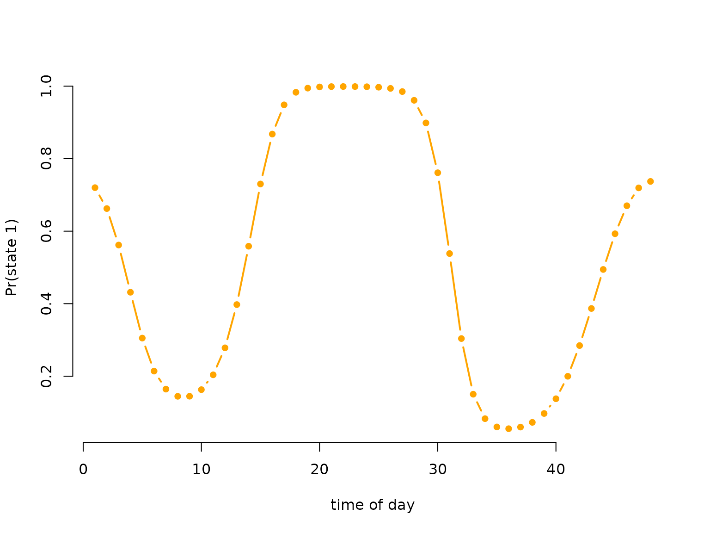
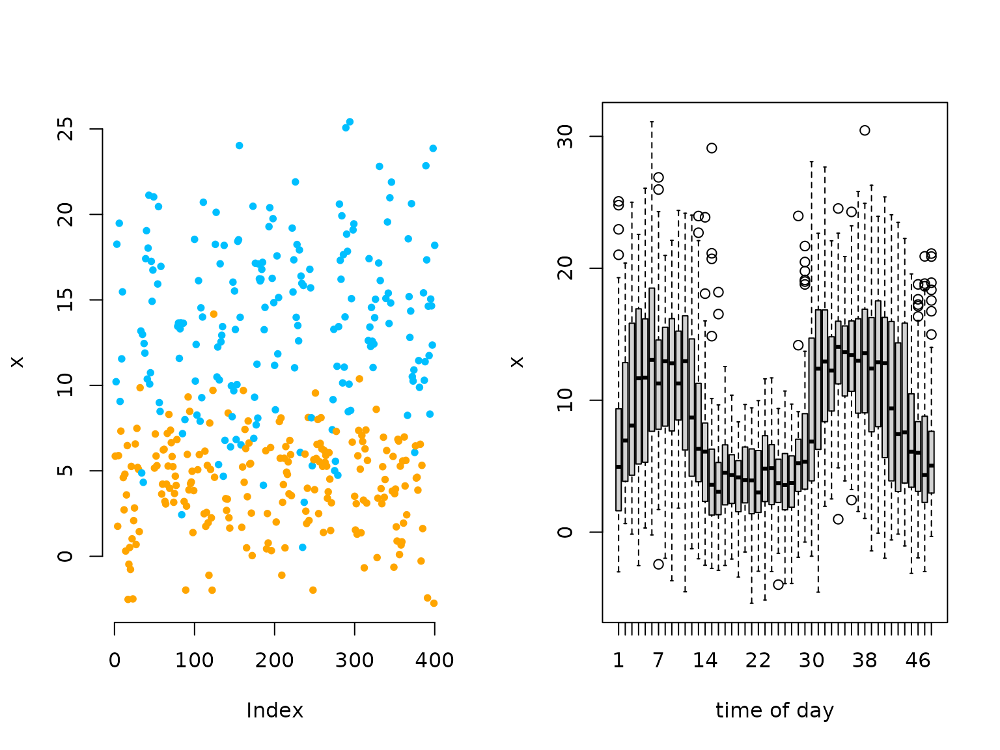
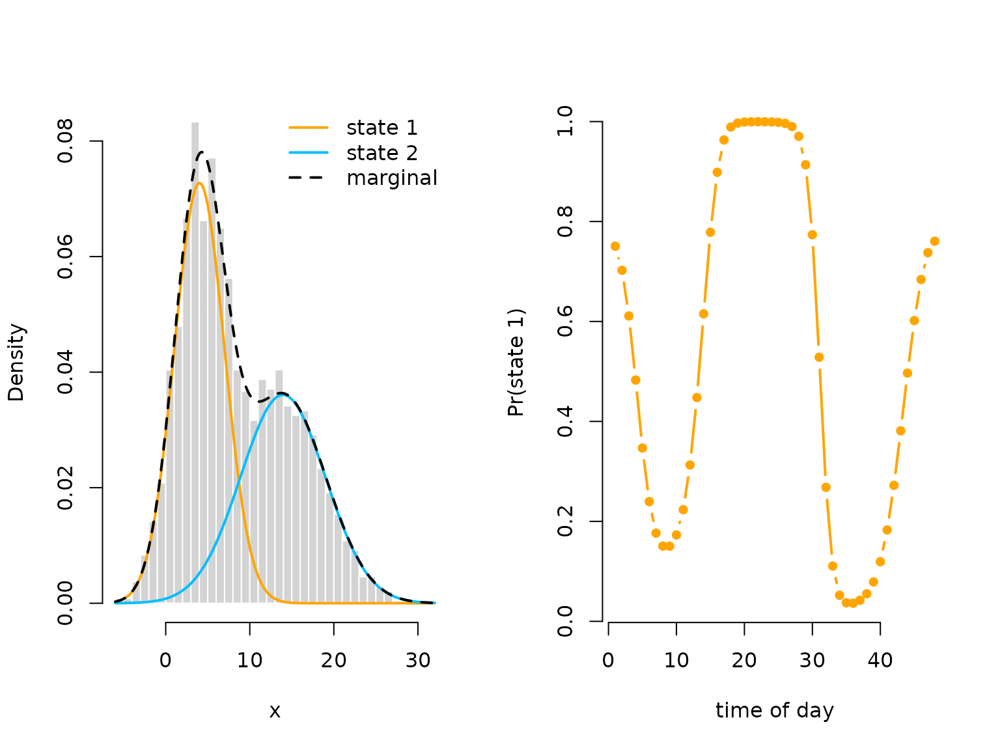

Periodic HMMs
Jan-Ole Koslik
Periodic_HMMs.RmdBefore diving into this vignette, we recommend reading the vignettes Introduction to LaMa and Inhomogeneous HMMs.
This vignette shows how to fit HMMs where the state process is a periodically inhomogeneous Markov chain. Formally, this means that for all
where is the transition probability matrix at time and is the cycle length. Such a setting can conveniently modelled by letting the off-diagonal elements be trigonometric functions of a cyclic variable such as time of day. While this model is a special case of the general, inhomogeneous HMM, it is often more interpretable and very important in statistical ecology, hence we discuss it separately.
Setting parameters for simulation
We simulate a 2-state HMM with Gaussian state-dependent
distributions. For the periodic inhomogeneity, we choose a bimodal
activity pattern. All
transition probability matrices can conveniently be calculated using
tpm_p(). Under the hood, this performs a basis expansion
using trigBasisExp() into sine and cosine terms and uses
linear predictos of the form
for the off-diagonal entries of the
transition probability matrix. The special case of periodically
inhomogeneous Markov chains also allows the derivation of a so-called
periodically stationary distribution (Koslik et al.
2023) which we can compute this distribution using
stationary_p().
# parameters
mu = c(4, 14) # state-dependent means
sigma = c(3, 5) # state-dependent standard deviations
L = 48 # half-hourly data: 48 observations per day
beta = matrix(c(-1, 1, -1, -1, 1,
-2, -1, 2, 2, -2), nrow = 2, byrow = TRUE)
Gamma = tpm_p(seq(1, 48, by = 1), L, beta, degree = 2)
Delta = stationary_p(Gamma)
# having a look at the periodically stationary distribution
color = c("orange", "deepskyblue")
plot(Delta[,1], type = "b", lwd = 2, pch = 16, col = color[1], bty = "n",
xlab = "time of day", ylab = "Pr(state 1)")
# only plotting one state, as the other probability is just 1-deltaSimulating data
# simulation
tod = rep(1:48, 50) # time of day variable, 50 days
n = length(tod)
set.seed(123)
s = rep(NA, n)
s[1] = sample(1:2, 1, prob = Delta[tod[1],]) # initial state from stationary dist
for(t in 2:n){
# sampling next state conditional on previous one and the periodic t.p.m.
s[t] = sample(1:2, 1, prob = Gamma[s[t-1],,tod[t]])
}
# sampling observations conditional on the states
x = rnorm(n, mu[s], sigma[s])
oldpar = par(mfrow = c(1,2))
plot(x[1:400], bty = "n", pch = 20, ylab = "x",
col = color[s[1:400]])
boxplot(x ~ tod, xlab = "time of day")
# we see a periodic pattern in the data
par(oldpar)Trigonometric modeling of the transition probalities
Writing the negative log-likelihood function
We specify the likelihood function and pretend we know the degree of
the trigonometric link which, in practice, is never the case. Again we
use tpm_p() and we compute the periodically stationary
start by using stationary_p() with the additional argument
that specifies which time point to compute.
nll = function(par, x, tod){
beta = matrix(par[1:10], nrow = 2) # matrix of coefficients
Gamma = tpm_p(tod = 1:48, L = 48, beta = beta, degree = 2) # calculating all L tpms
delta = stationary_p(Gamma, t = tod[1]) # periodically stationary start
mu = par[11:12]
sigma = exp(par[13:14])
# calculate all state-dependent probabilities
allprobs = matrix(1, length(x), 2)
for(j in 1:2) allprobs[,j] = dnorm(x, mu[j], sigma[j])
# return negative for minimization
-forward_p(delta, Gamma, allprobs, tod)
}Visualising results
Again, we use tpm_p() and stationary_p() to
tranform the parameters.
# transform parameters to working
beta_hat = matrix(mod$estimate[1:10], nrow = 2)
Gamma_hat = tpm_p(tod = 1:48, L = 48, beta = beta_hat, degree = 2)
Delta_hat = stationary_p(Gamma_hat)
mu_hat = mod$estimate[11:12]
sigma_hat = exp(mod$estimate[13:14])
delta_hat = apply(Delta_hat, 2, mean)
oldpar = par(mfrow = c(1,2))
hist(x, prob = TRUE, bor = "white", breaks = 40, main = "")
curve(delta_hat[1]*dnorm(x, mu_hat[1], sigma_hat[1]), add = TRUE, lwd = 2,
col = color[1], n=500)
curve(delta_hat[2]*dnorm(x, mu_hat[2], sigma_hat[2]), add = TRUE, lwd = 2,
col = color[2], n=500)
curve(delta_hat[1]*dnorm(x, mu_hat[1], sigma_hat[1])+
delta_hat[2]*dnorm(x, mu[2], sigma_hat[2]),
add = TRUE, lwd = 2, lty = "dashed", n = 500)
legend("topright", col = c(color[1], color[2], "black"), lwd = 2, bty = "n",
lty = c(1,1,2), legend = c("state 1", "state 2", "marginal"))
plot(Delta_hat[,1], type = "b", lwd = 2, pch = 16, col = color[1], bty = "n",
xlab = "time of day", ylab = "Pr(state 1)")
par(oldpar)Efficieny and convenience
While it is convenient to use tpm_p(), it performs the
basis expansion into sine and cosine terms each time it is evaluated.
This is wasteful in model estimation as these terms stay fixed. A better
alternative is to first build the corresponding design matrix. This can
be done conveniently using the cosinor() function, either
by itself or in a formula passed to make_matrices(). First
let’s call cosinor() by itself:
tod = 1:24 # cyclic time of day variable
Z = cosinor(tod, period = c(24, 12)) # design matrix
Z = cbind(intercept = 1, Z)
head(Z, 2)
#> intercept sin(2*pi*tod/24) cos(2*pi*tod/24) sin(2*pi*tod/12)
#> [1,] 1 0.258819 0.9659258 0.5000000
#> [2,] 1 0.500000 0.8660254 0.8660254
#> cos(2*pi*tod/12)
#> [1,] 0.8660254
#> [2,] 0.5000000The cosinor function excepts a period argument which
specifies the period of the trigonometric functions. As you can see,
period can be a vector, leading to a larger basis
expansion, i.e. more flexibility. If your model involves other
covariates than time of day, say temperature (temp), it
might be more convenient to use make_matrices() with a
formula:
data = data.frame(tod = rep(1:24, 2),
temp = rnorm(48, 20, 5))
modmat = make_matrices(~ temp * cosinor(tod, 24), data)
Z = modmat$Z
head(Z, 2)
#> (Intercept) temp sin(2 * pi * tod/24) cos(2 * pi * tod/24)
#> [1,] 1 18.93188 0.258819 0.9659258
#> [2,] 1 25.98938 0.500000 0.8660254
#> temp:sin(2 * pi * tod/24) temp:cos(2 * pi * tod/24)
#> [1,] 4.899932 18.28680
#> [2,] 12.994690 22.50746In both cases, the transition probability matrix can then be
calculated using tpm_g() or tpm_p():
# coefficient matrix
(beta = matrix(c(-2,-2, runif(2*(ncol(Z)-1))), nrow = 2))
#> [,1] [,2] [,3] [,4] [,5] [,6]
#> [1,] -2 0.5438832 0.3935516 0.75556189 0.8233689 0.7234530
#> [2,] -2 0.2698139 0.3127479 0.05147858 0.9122313 0.1442263
# constructing t.p.m.s
Gamma = tpm_p(Z = Z, beta = beta) # not first arguments in tpm_p
Gamma = tpm_g(Z, beta) # but first arguments in tpm_gContinue reading with LaMa and RTMB or Penalised splines.